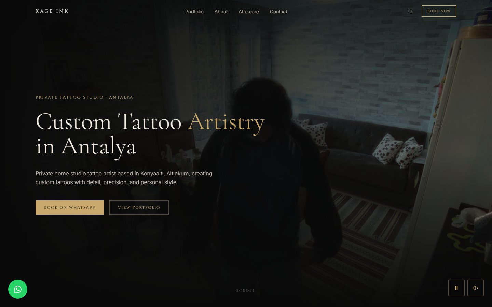
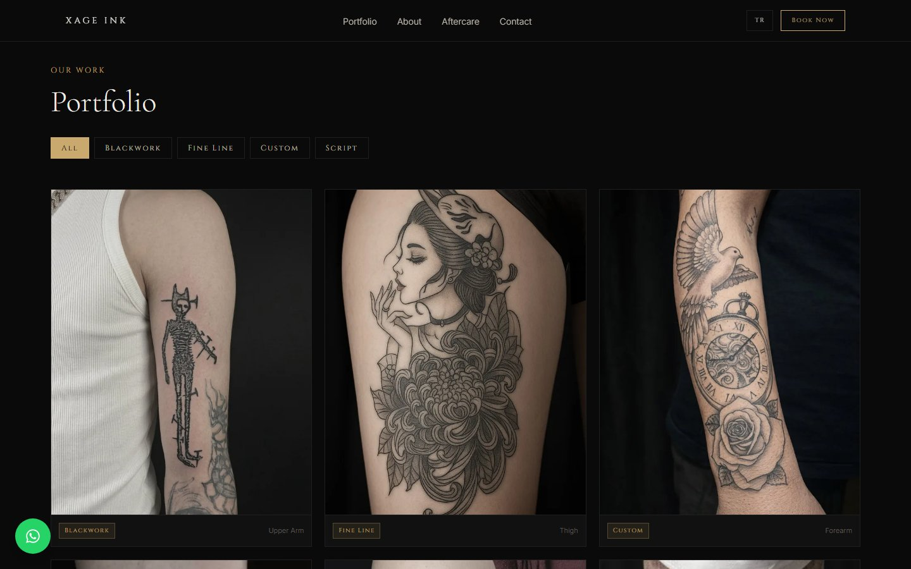
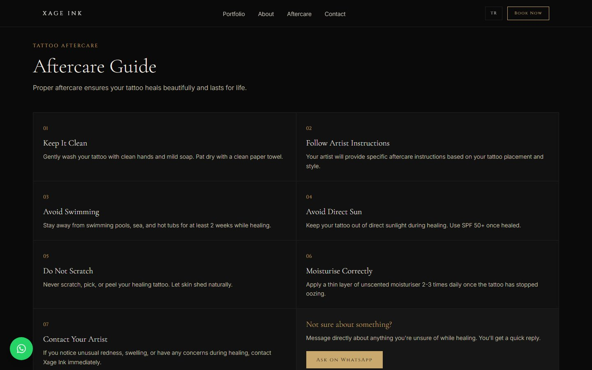
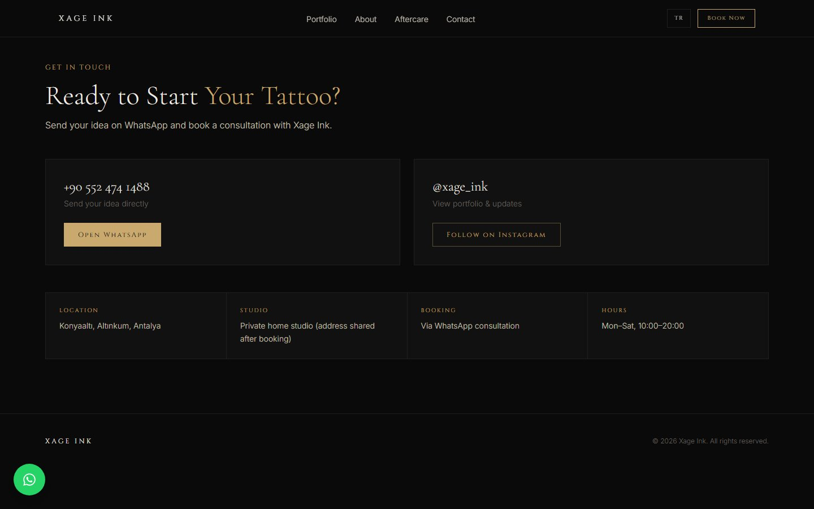
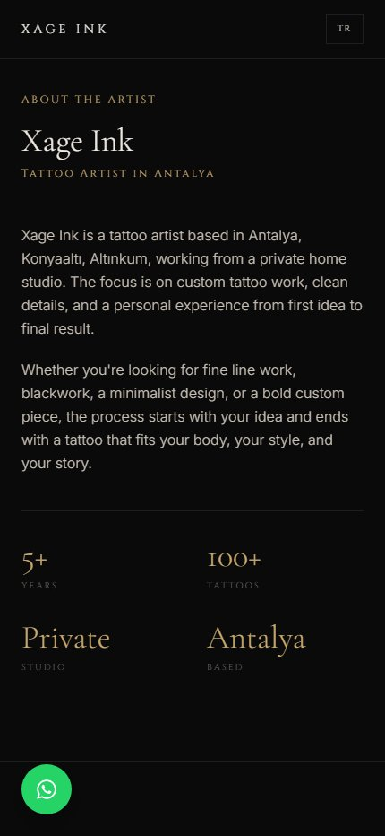
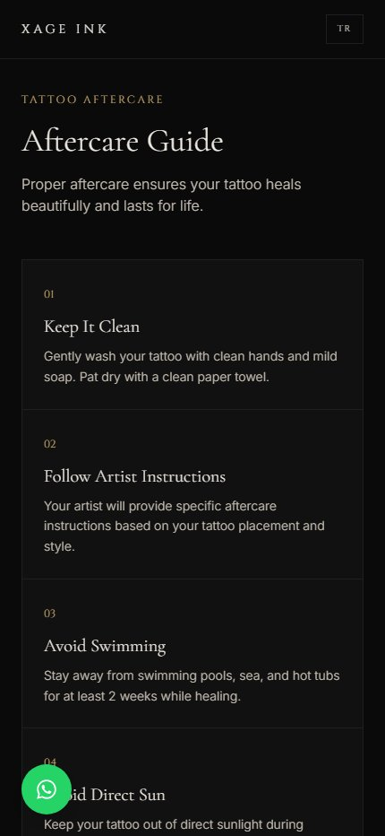
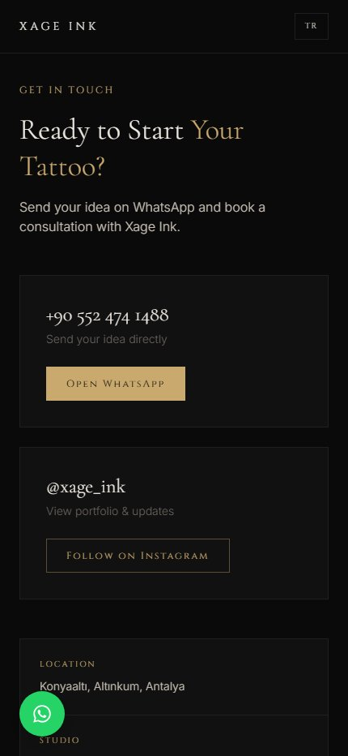

Case study · 2026
Xage Ink — bilingual website for a private tattoo studio
A premium, conversion-focused web presence for an appointment-only tattoo artist in Antalya, built to showcase the portfolio and turn visitors into booked consultations.

01 — Overview
The brief
Xage Ink is a private, by-appointment tattoo studio based in Konyaaltı, Antalya. The business relied on social media for discovery and direct messaging for bookings, with no owned platform to present its work or establish credibility.
The objective was to deliver a website that reflects the quality of the artwork, serves both local and international clients, and routes every visitor towards a single, low-friction action: starting a WhatsApp consultation.
02 — Challenge
Key considerations
- Trust without a storefrontThe studio operates from a private address, so the site had to build confidence through portfolio quality and professional presentation.
- Two audiencesLocal Turkish-speaking clients and English-speaking visitors to the Antalya coast.
- Messaging-led bookingsWhatsApp is the preferred channel; the site needed to support, not replace, that workflow.
- Local discoverabilityCompeting for high-intent local searches such as “tattoo artist Antalya”.

03 — Solution
What was delivered
- Editorial art directionA dark, gallery-style interface with refined serif typography and gold accents, opening on a cinematic video of the studio.
- Filterable portfolioWork categorised by Blackwork, Fine Line, Custom and Script, each labelled by placement with a “get a similar one” prompt.
- WhatsApp-first conversionA consistent booking path across the header, hero, floating action button and contact section.
- Aftercare guideA structured seven-step guide that reduces repeat enquiries and reinforces professionalism.
- Full localisationTurkish and English versions with dedicated URLs and hreflang tags.
- Technical SEOSchema.org TattooParlor structured data, semantic markup and location-focused metadata.







04 — Outcome
The result
Xage Ink now has an owned, bilingual platform that presents the artist's work with the same care as the tattoos themselves. Every page leads to a single booking action, and the technical foundation positions the studio for local search visibility in both Turkish and English.
- Next.js
- Responsive design
- i18n (TR / EN)
- Structured data
- Video hero
- WhatsApp integration
Hiring?